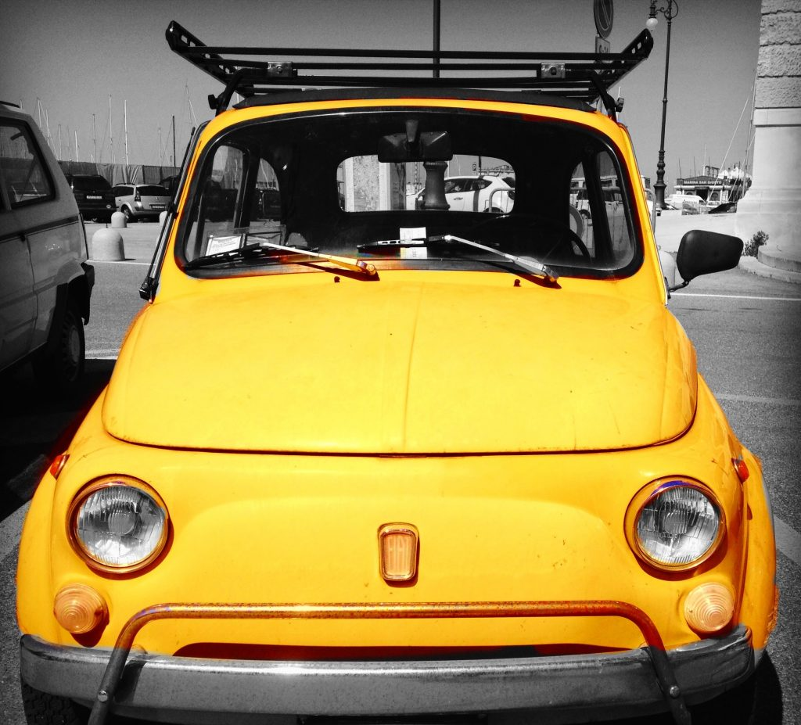

Photo by Francesca Tosolini
Today my daughter will do her final driving test (lots of adrenaline flowing right now), which made me think how easy it is to get a driver's license here in the States compared to Italy. In Italy the written test is extremely hard to pass: you need to study from a 200+ page manual, besides attending Driver's Ed classes and do the usual practice. In the end, the total cost is between €750 and €900. But can you drive in Italy using your driver's license? Members of the EU can use their own driver's license to drive in Italy. All the other tourists, including those from the United States, need an International Driving Permit (IDP) in addition to their own driver's license. Contact your local AAA (or the American Automobile Touring Alliance) to get an IDP. You will need to fill out a simple form, present 2 original passport pictures, and a $15 fee. Don’t forget to bring your own (valid) driver’s license as well. It’s important to know that the IDP does not replace your US driver’s license; you must still carry it with you when you travel in Italy. Keep in mind that, even though many times rental car companies and policemen don’t ask you to show it, you may still need an International Driving Permit when you pick up your rental car or if you are stopped at a police roadblock because it is required by law since 2005. So, it is a good idea to get one, just to be on the safe side. That said, I've heard of American tourists who drove in Italy without having one and had no problem even when they got stopped by the police. I even heard of an American friend of mine who moved to Italy and got her official Italian driver's license after years (and I mean a lot of years, like 10 or something...). My suggestion, and it is just a personal point of view, is to get one anyway simply because it is so easy and inexpensive to do. {This is an excerpt from chapter 2 “Driving in Italy” of the eBook “Italy from the Inside. A native Italian reveals the secrets of traveling in Italy”. To buy our eBook click here}